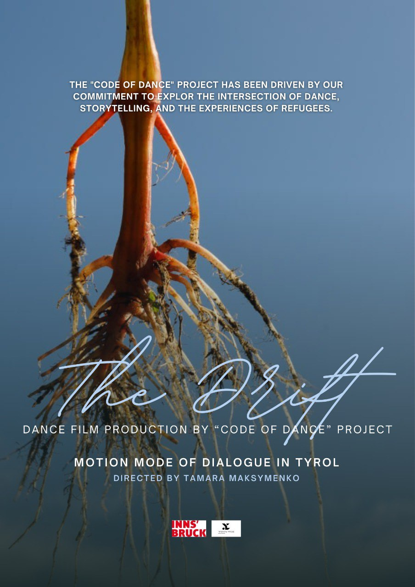

“The Drift”
The “Code of Dance” project has been an inspiring and challenging journey, driven by our commitment to exploring the intersection of dance, storytelling, and the experiences of refugees.
“The Drift” film tells the poignant story of a delicate flower that was brought to Europe centuries ago, symbolizing resilience and transformation. Through expressive dance, poetry, and music the journey of this flower is brought to life, capturing its struggles and triumphs as it adapts to a new world with certain obsticales.
The creation of this project unfolded through several key phases, each adding depth to the final work. We began by collaborating with refugees, whose stories shaped the narrative. With the plot in place, we focused on movement, blending Sufi Dervish, contemporary dance, and contact improvisation to express the emotional and spiritual dimensions of the story. Simultaneously, we developed poetry that intertwined with the dance, enhancing the themes and emotions. Finally, during the shooting phase, all these elements—personal narratives, plot, movement, and poetry—were seamlessly integrated, resulting in a powerful and cohesive film.
TRAILER
We’re thrilled to share our short dance film with you, and your small donation can make a huge difference. Your support helps the dancers, filmmakers, and everyone involved in creating something truly beautiful.
Our short film cost a small fee because we had only 1/5 of the entire budget needed to bring this project to life. We’ve invested not only our personal funds but also a lot of time and energy into making this film a reality. Your contribution helps cover production costs and supports the artists involved. We are sincerely grateful to everyone who wishes to see and support this work.
Thank you for watching our film — your small contribution, like the cost of a coffee at a café, helps us keep the project alive and thriving!
The Project’s background
Tamara Maksymenko, the creator of “Code of Dance,” draws deeply from her personal experiences as an immigrant. Moving to Austria, she encountered various obstacles and challenges, even though she never held refugee status. These experiences sparked a profound curiosity in her, leading her to explore the complexities of immigration through her art. By addressing these themes in her projects, Tamara seeks to find answers to the many questions surrounding identity, belonging, and adaptation in a new cultural landscape. “Code of Dance” is one such project, reflecting her journey and insights through the language of dance and film.
Music
The film’s evocative music, composed by a Russian artist who emigrated due to the current political situation in Russia, weaves together the themes of displacement and hope, creating a powerful narrative that resonates with both past and present experiences of migration.